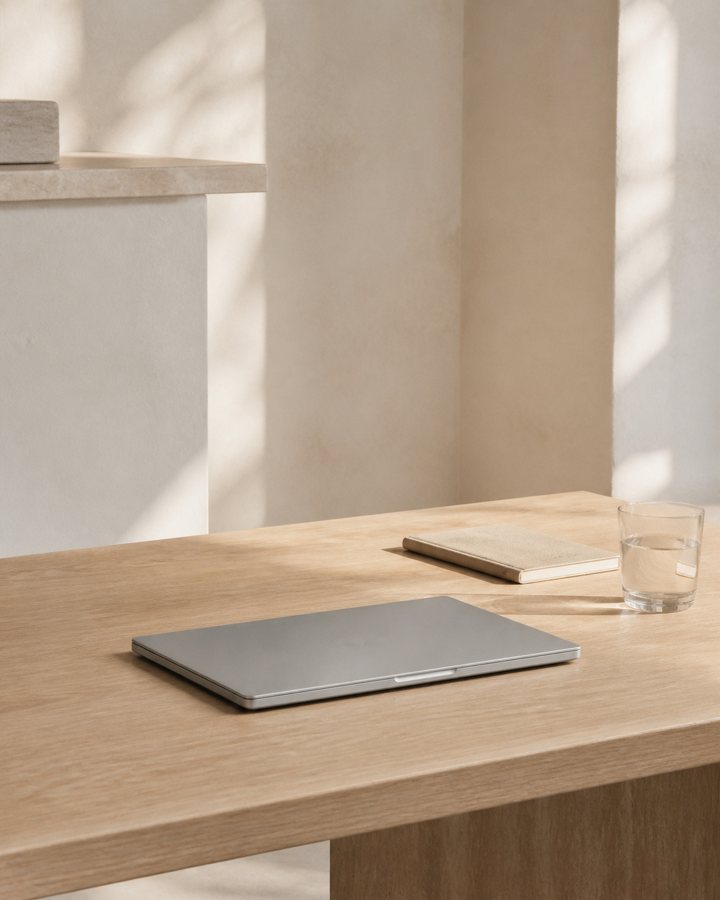

AI WORKFLOWS
Designing small, reliable systems that make intelligence genuinely useful.
PERSONAL OPERATING SYSTEM V.01
Building useful things with AI, Python, and curiosity.

I turn messy ideas into calm, capable systems.
I’m Xuen — a builder working at the intersection of artificial intelligence, thoughtful design, and practical software.
I care less about technology for its own sake and more about what it unlocks: clearer work, better decisions, and a little more room to think.
Designing small, reliable systems that make intelligence genuinely useful.
Automating the repetitive so humans can stay with the interesting.
Making complex capability feel simple, obvious, and quietly delightful.
A selection of experiments, tools, and systems shaped around real questions.
An AI thinking companion that turns scattered notes into clear next actions.
PYTHON / LLM / PRODUCTA modular automation layer for the quiet, repetitive work behind creative teams.
PYTHON / API / AUTOMATIONA personal research system for collecting less and understanding more.
LOCAL-FIRST / SEARCH / WRITINGA living collection of half-formed thoughts, weekend builds, and useful accidents.
A spatial interface for navigating research.
Single-purpose AI tools that do one job well.
A focus timer that knows when to disappear.
Patterns for better human–AI collaboration.
05 / OPEN CHANNEL
Have a useful problem?
LET’S TALK↗